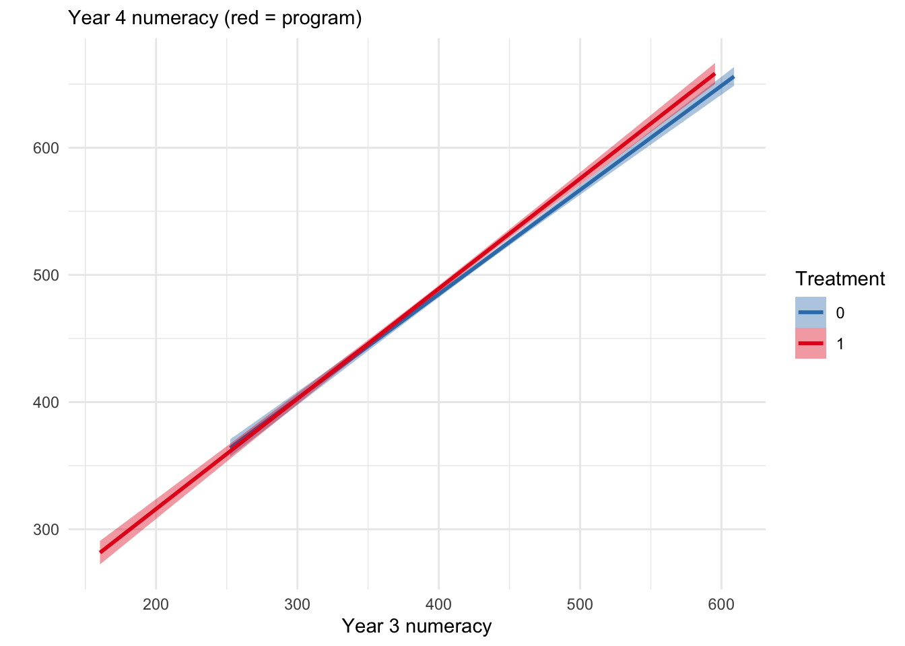
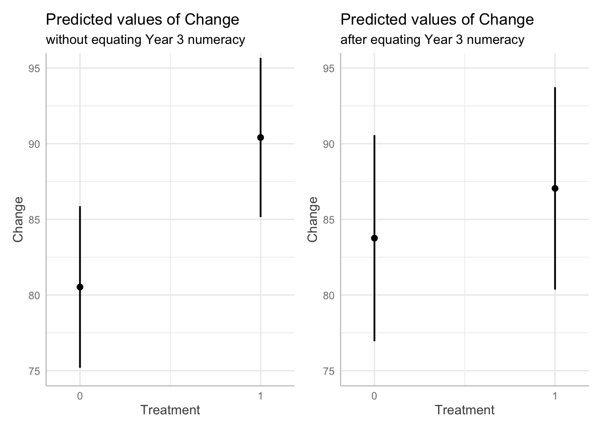
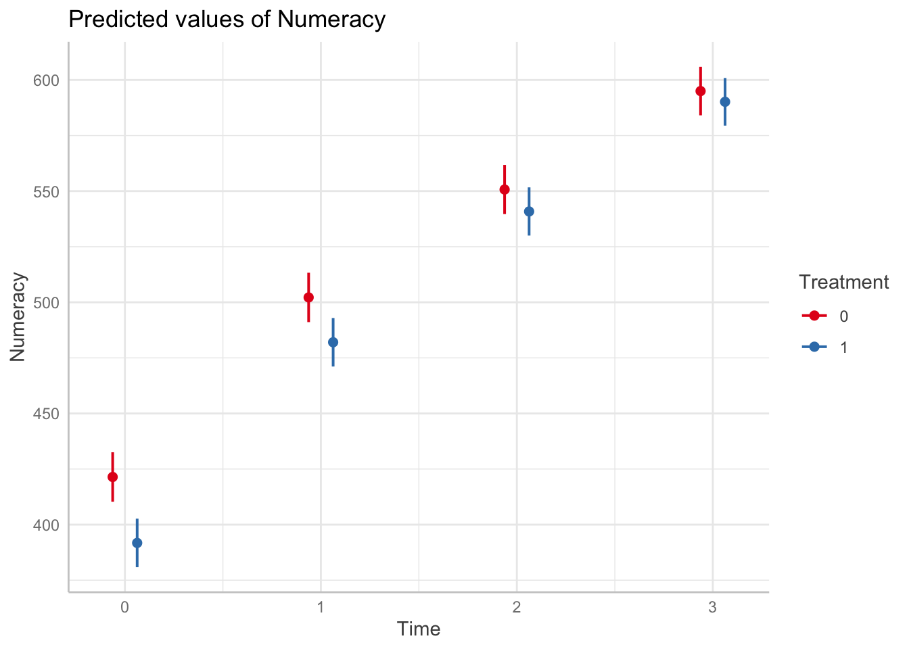
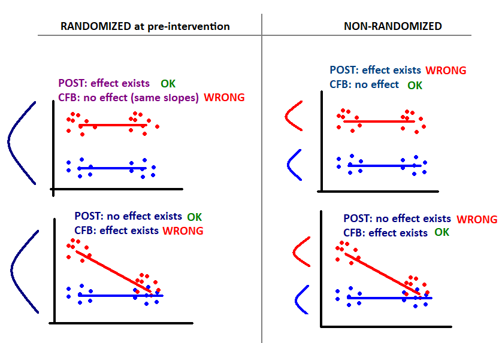

You have been asked to evaluate a numeracy program that is provided to Year 3 students in NSW government schools. You are required to:
The program was designed to improve numeracy proficiency and is a whole-of-school intervention. All Year 3 students in participating schools participate in the program at the beginning of the school year in 2018.
You undertake a statistical analysis of the impact of the program using a Hierarchical Linear Modelling (HLM) technique. The model has a two-level structure with students (level-1) nested within schools (level-2). Table 1 (on page 2) shows the output from the HLM analysis, using the student data from 2018 to 2019.
The dependent variable in the model was Year 4 Numeracy results. The model included the following school-level variables:
The model also included the following student-level variables:
| Model | Coefficient (B) | Std Error | Beta | t | p-value |
|---|---|---|---|---|---|
| Constant | 92.011 | 28.832 | 1.000 | 3.191 | 0.001 |
| Relative school growth | 0.884 | 0.069 | 0.246 | 12.757 | 0.000 |
| Year 3 Numeracy | 0.741 | 0.020 | 0.711 | 36.756 | 0.000 |
| SES | 0.065 | 0.022 | 0.066 | 3.003 | 0.003 |
| Gender | 5.216 | 2.703 | 0.035 | 1.930 | 0.054 |
| First Nations status | -17.001 | 6.108 | -0.053 | -2.783 | 0.005 |
| Language Background | 0.107 | 1.649 | 0.001 | 0.065 | 0.948 |
| Treatment | 4.126 | 3.070 | 0.256 | 1.344 | 0.179 |
The aim of the model was to evaluate the (short-term) impact of the program. The most important assumption of the model is there were no pre-existing differences between the program and non-program schools. I.e., any differences were random (which can be assumed when schools were randomly allocated to treatment arms).
When pre-existing differences exist, interpreting the impact of the program (Treatment \(\beta\)) on Year 4 scores is not straightfoward. This model adjusted for pre-existing differences by including Year 3 scores, which produces an estimate of the Year 4 differences among children with the same Year 3 numeracy levels. However if (as is likely) schools with low numeracy students were more likely to be allocated to the program then this assumption is not warranted, and the treatment \(\beta\) will underestimate the total impact of the program on numeracy levels at Year 4, due to regression-to-the-mean effects (RTM). The RTM effects occur because equating Year 3 scores is similar to selecting above average students in poor schools for treatment and below average students in good schools as comparisons, which will result in smaller than expected Year 4 differences after each group regresses to their respective group means. In this way, conditional treatment effects can be biased and in some cases underestimate the true effect.
However after random allocation, interpreting the Treatment \(\beta\) in the presence of pre-existing differences is straightforward, as all differences between schools not due to treatment are random: Adjusting for pre-existing differences is warranted and the adjusted Treatment \(\beta\) will not be biased (and be more precise).
Nb. The Relative school growth score represents the relative change for each school, and so adjusts for differences in growth between each school - that is the clustered changes (among students) due to school rather than treatment. However it seems likely to covary with any school-level treatment effect, which is likely to confound \(\tau\) (when included in my experiments in the analyses below I cannot replicate the results provided).
There is no way to test whether allocation to the program was random; testing for significant differences in Year 3 numeracy between the treatment groups can tell us if pre-existing differences were present but will not help us determine whether those differences were due to a systematic effect or random variation (sometimes random allocation results in significant differences between groups - in which case the average treatment effect is unbiased in the long run).
However we can assess whether pre-existing differences in Year 3 numeracy are present, which will indicate how well-matched the treatment groups were, and may also reveal whether RTM effects were likely.
Let’s take a look at the data
| School_ID | Student_ID | Year_level | Numeracy | Gender | First_Nations | Language_background | SES | Treatment |
|---|---|---|---|---|---|---|---|---|
| 1100067 | 1 | 3 | 464.3 | 0 | 0 | 0 | 1159 | 0 |
| 1100067 | 1 | 4 | 542.7 | 0 | 0 | 0 | 1159 | 0 |
| 1100067 | 1 | 5 | 531.1 | 0 | 0 | 0 | 1159 | 0 |
| 1100067 | 1 | 6 | 554.9 | 0 | 0 | 0 | 1159 | 0 |
| 1100044 | 2 | 3 | 258.1 | 1 | 0 | 1 | 1064 | 1 |
| 1100044 | 2 | 4 | 387.2 | 1 | 0 | 1 | 1064 | 1 |
| 1100044 | 2 | 5 | 428.1 | 1 | 0 | 1 | 1064 | 1 |
| 1100044 | 2 | 6 | 542.3 | 1 | 0 | 1 | 1064 | 1 |
| 1100044 | 3 | 3 | 352.5 | 0 | 0 | 1 | 1064 | 1 |
| 1100044 | 3 | 4 | 456.7 | 0 | 0 | 1 | 1064 | 1 |
The records are arranged in long format with rows arranged by school, student and year; and each row representing a student-year observation.
For Task 1, we will select the data from Years 3 and 4, and rearrange
it into wide format with Pre and Post
scores.
| School_ID | Student_ID | Gender | First_Nations | Language_background | SES | Treatment | Pre | Post |
|---|---|---|---|---|---|---|---|---|
| 1100021 | 41 | 1 | 0 | 0 | 1180 | 1 | 358.9 | 507.9 |
| 1100021 | 59 | 0 | 0 | 0 | 1180 | 1 | 467.0 | 571.2 |
| 1100021 | 61 | 0 | 0 | 0 | 1180 | 1 | 493.2 | 529.4 |
| 1100021 | 62 | 0 | 0 | 1 | 1180 | 1 | 361.1 | 421.1 |
| 1100021 | 67 | 0 | 0 | 1 | 1180 | 1 | 413.1 | 523.9 |
| 1100021 | 68 | 0 | 0 | 0 | 1180 | 1 | 378.6 | 435.1 |
| 1100021 | 69 | 1 | 0 | 0 | 1180 | 1 | 405.7 | 420.7 |
| 1100021 | 70 | 0 | 0 | 0 | 1180 | 1 | 359.0 | 416.7 |
| 1100021 | 74 | 0 | 0 | 0 | 1180 | 1 | 429.1 | 502.5 |
| 1100021 | 76 | 0 | 0 | 0 | 1180 | 1 | 563.5 | 599.3 |
Pre-existing numeracy differences between groups were present, indicating the groups were not well-matched and consistent with the likely presence of RTM effects:
df %>%
filter(Year_level == 3) %>%
lm(Numeracy ~ 1 + Treatment,
data = .) %>%
tidy()| term | estimate | std.error | statistic | p.value |
|---|---|---|---|---|
| (Intercept) | 422.70 | 2.204 | 191.76 | 0 |
| Treatment1 | -31.18 | 3.113 | -10.02 | 0 |
The intercept of 423 is the mean numeracy level among the non-program schools in Year 3, while the estimate for the treatment effect of -31.2 (p < .001) represents a significant pre-existing deficit in numeracy scores among the program schools.
# Adding further controls does not remove the pre-existing difference:
df %>%
filter(Year_level == 3) %>%
lm(Numeracy ~ 1 + Treatment +
First_Nations + Language_background + SES + Gender,
data = .) %>%
tidy() |>
filter(str_detect(term, "Treatment"))| term | estimate | std.error | statistic | p.value |
|---|---|---|---|---|
| Treatment1 | -24.69 | 3.033 | -8.139 | 0 |
Including predictors of poor numeracy (e.g., SES, First_Nations, Gender) reduces but does not remove the pre-existing difference between treatment groups, consistent with enrolment of schools with poor numeracy into the program.
Also note the higher proportion of minorities, lower SES regions and males in the program schools, consistent with enrolment of schools with poor numeracy into the program.
df %>%
filter(Year_level == 3) %>%
group_by(Treatment) %>%
summarise(
Numeracy = mean(Numeracy),
First_Nations = mean(First_Nations),
Language = mean(Language_background),
SES = mean(SES),
Females = mean(Gender))| Treatment | Numeracy | First_Nations | Language | SES | Females |
|---|---|---|---|---|---|
| 0 | 422.7 | 0.0291 | 0.1809 | 1042 | 0.4875 |
| 1 | 391.5 | 0.0993 | 0.3216 | 1038 | 0.5160 |
Given the pre-existing differences in numeracy between groups, a second important assumption of the model is the impact of the program is homogenous across levels of numeracy. That is, the model assumes there are no heterogenous treatment effects between low and high levels of numeracy. This can be tested by plotting Year 3 numeracy levels against Year 4 numeracy levels for each student Wright (2003). The vertical distance between these slopes in each panel indicates the treatment effect. Where the slopes are not parallel indicates the program may have a heterogenous treatment effect across Year 3 numeracy levels.
wdf %>%
ggplot(aes(x = Pre, y = Post, color = Treatment, fill = Treatment)) +
# geom_point(alpha = 0.6) +
geom_smooth(method = "lm", formula = y ~ x, se=T) +
# scale_color_manual(values = c(blues9[5], blues9[9])) +
scale_color_manual(aesthetics = c("fill", "color"),
values = c("#377EB8", "#E41A1C")) +
labs(subtitle = "Year 4 numeracy (red = program)",
y = "", x = "Year 3 numeracy") +
theme_minimal()
The association between Year 3 and Year 4 numeracy is steeper for program schools (in red) indicating heterogenous treatment effects may be present, perhaps due to the program improving above average students more than below average students.
In the presence of pre-existing differences (without randomization), it is not possible to conclude the program was effective on the basis of comparisons between Year 4 scores of the program and non-program schools. This is because of two reasons: 1) some of the difference in Year 4 numeracy may have been due to the pre-existing differences in Year 3 (the association between Year 3 and Year 4 numeracy scores was \(\beta = 0.741\), \(p < .001\) in Table 1 above); 2) equating groups on Year 3 numeracy scores either by matching or regression control will induce RTM effects (see above).
However it is still possible to determine whether program schools gain more numeracy on average than schools not in the program by the estimand of a gain score analysis. It is important to note that a gain score analysis answers a distinctly different question from the post score ANCOVA, namely whether program schools gain the same amount of numeracy on average as the other schools. By contrast the ANCOVA assesses the difference in post means after equating for pre differences).
Below we estimate the relative gain of program schools over other schools to determine whether more benefit accrued to the program schools after treatment.
cwdf <- wdf |>
mutate(Change = Post - Pre)The simplest gain score analysis is done with a t-test/OLS. The unadjusted estimate is the difference between the mean differences, and shows a much more profound improvement among program schools. This produces an unbiased estimate however it does not account for the expected dependency between students from the same school, and so does not control the type-I error rate at the nominal level (i.e., the p-value is too low).
cwdf %>%
# recode so gain is over non-program schools:
mutate(Treatment = fct_rev(Treatment)) %>%
t.test(Change ~ Treatment, data = .) %>%
tidy() %>%
select(`0` = estimate2, `1` = estimate1, estimate:conf.high) | 0 | 1 | estimate | statistic | p.value | parameter | conf.low | conf.high |
|---|---|---|---|---|---|---|---|
| 80.76 | 90.26 | 9.501 | 4.937 | 0 | 1920 | 5.727 | 13.28 |
The estimate 9.501 from the t-test is an unbiased estimate, however the error term (and therefore the p-value .000000862) does not respect the dependency between students within the same school in the data.
To account for the dependency, we can adjust the error term over schools rather than students in a nested linear model with blocked error terms:
aov(Change ~ 1 + Treatment + Error(School_ID),
data = cwdf) -> aov.change.school
aov.change.school %>%
emmeans::emmeans("Treatment") %>%
as.data.frame() %>%
select(Treatment, emmean) %>%
spread(Treatment, emmean) %>%
mutate(estimate = `1` - `0`) ## Note: re-fitting model with sum-to-zero contrasts| 0 | 1 | estimate |
|---|---|---|
| 80.77 | 90.28 | 9.501 |
The estimate 9.501 is equivalent to the t-test result, but now the degrees of freedom (df = 47) is consistent with the number of schools (n = 49) and so the p-value (.018) is correctly adjusted.
To account for the dependency we can also estimate a random intercept for each school in a linear mixed model (LMM):
fit.2 <- lmer(Change ~ 1 + Treatment + (1|School_ID),
data = as.data.frame(cwdf))
fit.2 %>%
tidy(effects = "fixed", conf.int=T) %>%
filter(term == "Treatment1") | effect | term | estimate | std.error | statistic | df | p.value | conf.low | conf.high |
|---|---|---|---|---|---|---|---|---|
| fixed | Treatment1 | 9.881 | 3.822 | 2.586 | 48.12 | 0.0128 | 2.198 | 17.56 |
The estimate from the LMM of 9.88 (3.82) is similar (but not equivalent) to the t-test result. Nevertheless, the degrees of freedom (48.1) and therefore the p-value (.0128) reflects the unique amount of information provided by each school (ICC = 0.076).
We can also estimate gain in a mixed 2 x (2) ANOVA with treatment and
time (Pre, Post) as factors, where the interaction term
(Time:Treatment) represents the average gain of the program
schools over the other schools.
In a RM ANOVA, Time is nested within School
and this must be entered into the error term. Note the result matches
the nested ANOVA on the change scores:
lpdf <- df %>%
filter(Year_level %in% 3:4) %>%
mutate(Time = Year_level - 3)
aov.interact.school <- aov(Numeracy ~ Treatment*Time + Error(School_ID/Time),
data = lpdf)
emmeans::emmeans(aov.interact.school, ~ Time|Treatment) %>%
as.data.frame() %>%
select(Time, Treatment, emmean) %>%
spread(Time, emmean) %>%
mutate(delta = `1` - `0`) %>%
select(Treatment, delta) %>%
spread(Treatment, delta) %>%
mutate(estimate = `1` - `0`) ## Note: re-fitting model with sum-to-zero contrasts## Warning in (mth$objs[[1]])(object, trms, xlev, grid, ...): Some predictors are correlated with
## the intercept - results may be very biased| 0 | 1 | estimate |
|---|---|---|
| 80.76 | 90.26 | 9.501 |
The estimate (9.501), degrees of freedom (47) and p-value (.018) exactly match the nested linear model of change scores above.
Testing the same estimate in a linear mixed model setting, where the
interaction term (Time:Treatment) represents the gain of
program schools over other schools:
fit.3 <- df %>%
filter(Year_level %in% 3:4) %>%
mutate(Time = Year_level - 3) %>%
as.data.frame() %>%
lmer(Numeracy ~ 1 + Time*Treatment + (1|School_ID/Time),
data = .)
fit.3 %>%
tidy(effects = "fixed", conf.int = T) %>%
filter(term == "Time:Treatment1") | effect | term | estimate | std.error | statistic | df | p.value | conf.low | conf.high |
|---|---|---|---|---|---|---|---|---|
| fixed | Time:Treatment1 | 9.512 | 4.006 | 2.374 | 52.23 | 0.0213 | 1.474 | 17.55 |
The LMM with nested groups for school and time produces an estimate similar to the t-test and RM ANOVA on gain scores: 9.51 (±4.01). Compared to the LMM on gain scores, this estimate has more degrees of freedom (52.2 vs 48.1) and more residual random variance (3780 vs 1650), because it is trying to explain two time points rather than a single difference score.
Note that adding further controls (e.g., Year 3 numeracy scores) to the gain score models will reintroduce RTM effects, as the model will now be comparing gains among students from each group with the same Year 3 numeracy score, which will be above average for the treatment group and below average for the control group.
# The effect of equating Year 3 numeracy scores on predicted gain
p1 <- ggpredict(fit.2, terms = "Treatment") %>% plot() +
coord_cartesian(ylim = c(75, 95)) +
labs(subtitle = "without equating Year 3 numeracy")
# Nb. Adding cPre turns this model into the post scores ANCOVA
fit.2b <- lmer(Change ~ 1 + Treatment + Pre + (1|School_ID),
data = as.data.frame(cwdf)) # 3.29 (4.88)
p2 <- ggpredict(fit.2b, terms = "Treatment") %>% plot() +
coord_cartesian(ylim = c(75, 95)) +
labs(subtitle = "after equating Year 3 numeracy")
p1 + p2
Likewise, adding the Year 3 numeracy scores (Pre) as a
covariate on the RHS of the two-way ANOVAs is invalid since Pre is
already included on the LHS in the first level of Time.
In the context of a pseudoexperimental design such as this, the consensus appears to be that covariates for pre-existing differences should not be included in a gain score analysis, as equating these real differences is likely to mask the total effects of the program (Twisk et al, 2018; Dallal 2020). According to Pearl (2016), the decision rests on where the Year 3 numeracy levels stand with respect to the program allocation in a causal DAG. If the schools were allocated to the program because of their low numeracy levels then equating for numeracy levels and including them as a covariate may be warranted if we are interested in the direct effect of the program. However if we are interested in the total compensatory effect of the program among low numeracy students (so poor numeracy stands as a mediator of the program effect), then we should estimate the total effect of the program and not adjust for pre-existing differences. We aren’t told in this example how allocation to the program was performed, so the only reasonable justification I can provide is that we should be interested in how much the program improved numeracy among the disadvantaged schools, rather than whether the program will improve numeracy among all schools on average.
Also note that without random allocation to groups, any estimated differences in gain may be due to pre-existing differences between the program schools and the other schools rather than the program, or even due to an interaction between the program and the schools (i.e., if the program only works in the kind of schools in the program); and so the estimand does not represent the average treatment effect (\(\tau\)). Nevertheless, an estimate of the difference in slope may be an informative of the success of the program (i.e., in those schools), especially when we have no reason to expect program schools to gain on other schools without treatment.
If schools were placed in the program because they had lower numeracy levels, then we cannot conclude anything about the average treatment effect of the program. The post score ANCOVA treatment estimate above may include RTM effects and produce a biased estimate. However the gain score analyses and the two-way ANOVAs indicate the program moderately improved numeracy among poor performing schools, with the potential average improvement ranging between 1 or 2 points to more than 17 points.
If allocation to the program was random, then the average treatment effect of the program on Year 4 numeracy is small (4.126) but everything from moderate positive effects (10.1432) to small negative effects (-1.8192) are consistent with the data, including a zero effect (\(p > .05\)).
Regarding other practical considerations: We don’t know if the effect of treatment is interacting with any of the other predictor variables (e.g., Year 3 numeracy, relative school growth or SES). Adding interaction terms would help determine the presence of varying effects of treatment and so better understand the conditions under which the treatment works, which may help when planning wider implementation or policy.
You are going to undertake a statistical analysis to evaluate the long-term impact of the program. To do this, the numeracy performance of the student sample from Task 1 was tracked to Year 6. The annual numeracy results from Year 3 to Year 6 for both treatment and control groups are given in the data file “Year 3-6 numeracy.csv”. The data is in long format meaning that a student has multiple rows of records.
Same demographic variables as in Task 1 (except relative school growth) are recorded in the data file. Student IDs, School IDs and the numeracy scores from Year 3 to Year 6 are also included. The “Year_level” variable indicates which Year level the record comes from.
The suggested solution to a similar design, albiet in the context of an RCT, is offered by Bell & Rabe, 2020. Based on simulations of cluster randomized trial data where the outcome was continuous and measured at baseline and three post-intervention time points (as we have here) they suggested the following model:
library(nlme)
library(contrast)
# “treat” and “time” are factors with levels (0,1) and (0,1,2,3) respectively.
Model1 <- lme(y ~ treat*time,
random = ~ 1 | cluster_id,
weights = varIdent(form = ~ 1 | time),
correlation = corSymm(form = ~ 1 | cluster_id/subject_id),
data = dataset, control = lmeControl(maxIter=10000, msMaxIter = 10000))
summary(Model1)
# Note that this contrast does not use the Kenward-Roger correction for degrees
# of freedom which is not implemented in nlme.
contrast(Model1, list(time = '3', treat = '1'), list(time = '3', treat = '0'))This mixed model for repeated measures (MMRM) uses an unstructured time and covariance structure. Unstructured time means that time is modeled categorically, rather than continuously as a linear or polynomial function, and allows for an arbitrary trajectory over time. While the continuous time models may use fewer degrees of freedom and may, therefore, be more powerful, it can be difficult to anticipate the outcome’s time trajectory in advance. Since clinical trials often require a pre-specified analysis plan, unstructured time can be appealing. In the context of randomized controlled trials, fixed effects of time, treatment and their interaction are included in the MMRM model. The interaction term accommodates different patterns of change over time between the arms. Baseline values of the outcome are sometimes included. Maximum-likelihood-based mixed models provide unbiased estimation for data that are MCAR or MAR, as long as the model is not misspecified. All outcome data are used, regardless of whether an individual has complete data or not, making these models consistent with an intention-to-treat analysis.
Cluster randomized trials with longitudinally measured outcomes have two sources of non-independence: the cluster and the repeated measures over time. Linear mixed-effects models are one option for handling the non-independence of measurements over time. In the mixed-model context, one may use a random-coefficients model, using random effects for a subject’s intercept and sometimes slope. Alternatively, one may use covariance pattern models, where the covariance between repeated measures on the same subject is modeled explicitly from the residual effects. Some commonly used covariance structures, available in statistical software, include compound symmetric, autoregressive, or unstructured. A compound symmetric structure assumes that any two measurements on the same individual have the same covariance, regardless of timing. An autoregressive structure assumes that measurements’ correlation drops over time exponentially. Unstructured covariance makes no assumptions about the correlation between measurements, thereby rendering misspecification not a problem; however, it can require that a large number of parameters must be estimated. However, many cluster trials have a fairly small number of assessments on each subject, as we have here.
This model is easily extended to include more than two arms, the baseline value of the outcome variable as a covariate (instead of in the outcome vector as shown here), and/or a baseline by treatment arm interaction.
Our interest was the long-term effect of the program, so under an RCT assumption we could ignore pre-existing differences at baseline (Time 0) and focus on the difference at the fourth time point between the treatment arms, which can be estimated using a contrast within the model.
library(nlme)
library(ggeffects)
fit.9 <- df %>%
mutate(Time = as.factor(Year_level - 3),
# Treatment = fct_rev(Treatment),
Student_ID = as.factor(Student_ID)) %>%
as.data.frame() %>%
lme(Numeracy ~ 1 + Time*Treatment,
random = ~1 | School_ID,
weights = varIdent(form = ~ 1 | Time),
correlation = corSymm(form = ~ 1 | School_ID/Student_ID),
data = ., control = lmeControl(maxIter=10000, msMaxIter = 10000))ggpredict(fit.9, terms = c("Time", "Treatment")) %>%
plot()
hypothesis_test(fit.9, c("Time [3]", "Treatment"))| Time | Treatment | Contrast | conf.low | conf.high | p.value |
|---|---|---|---|---|---|
| 3-3 | 0-1 | 4.827 | -10.86 | 20.52 | 0.5389 |
The estimate of the difference between treatment arms in the fourth year (Time 3), after adjusting for pre-existing differences at Time 0 was 4.83 [-10.86, 20.52], p = .5.
However if we relax the RCT assumption, we can compare the total long-term gain in numeracy between program and non-program schools:
predict_response(fit.9, terms = c("Time", "Treatment")) %>%
test_predictions(test = "interaction") |>
slice(3)| Time | Treatment | Contrast | conf.low | conf.high | p.value |
|---|---|---|---|---|---|
| 0-3 | 0 and 1 | 24.84 | 20.54 | 29.14 | 0 |
The estimate of the difference in total growth among program schools over non-program schools in the fourth year is 24.84 [20.54, 29.14], p < .001.
Beyond the MMRM, a linear mixed model with a linear effect of time can test an interaction model, similar to the two-way ANOVA in Task 1, which will determine the (average) gain per year among program schools relative to other schools, over Years 3 to 6:
fit.5 <- lmer(Numeracy ~ Treatment*Year_level + (1|School_ID/Year_level),
data = df)
tidy(fit.5, effects = "fixed", conf.int=T) %>%
filter(term == "Treatment1:Year_level")| effect | term | estimate | std.error | statistic | df | p.value | conf.low | conf.high |
|---|---|---|---|---|---|---|---|---|
| fixed | Treatment1:Year_level | 8.383 | 1.85 | 4.53 | 146.5 | 0 | 4.726 | 12.04 |
# adding covariates does not change this estimate (8.38±1.85 vs 8.38±1.85)
lmer(Numeracy ~ Treatment*Year_level + SES + Gender + First_Nations +
Language_background + (1|School_ID/Year_level),
data = df) %>%
tidy(effects = "fixed") %>%
filter(term == "Treatment1:Year_level") The interaction between Treatment and
Year_level indicates the long-term impact of the program
over other schools. The average relative gain of program schools from
Year 3 to Year 6 is 8.38 [4.73, 12.0] points over other
schools. We can multiply this estimate by 3 to obtain the total growth
in the final year (26.52).
To determine the long-term effect of the program over any short-term effect, we can omit Year 3 from the interaction and estimate the relative gain from Year 4. Including the Year 3 scores as a (centered) covariate will equate pre-existing differences in this model (and so reintroduce RTM effects).
left_join(df,
filter(df, Year_level==3) %>%
select(School_ID, Student_ID, Pre = Numeracy),
by = join_by(School_ID, Student_ID)) %>%
filter(Year_level > 3) %>%
lmer(Numeracy ~ Treatment*Year_level + (1|School_ID/Year_level),
data = .) -> fit.6## boundary (singular) fit: see help('isSingular')## Warning: Model failed to converge with 1 negative eigenvalue: -3.0e+02tidy(fit.6, effects = "fixed", conf.int = T) %>%
filter(term == "Treatment1:Year_level") | effect | term | estimate | std.error | statistic | df | p.value | conf.low | conf.high |
|---|---|---|---|---|---|---|---|---|
| fixed | Treatment1:Year_level | 7.669 | 1.848 | 4.149 | 5736 | 0 | 4.046 | 11.29 |
After realising the short-term gains, the average long-term gain of program schools in Year 4 to Year 6 was 7.67 [4.05, 11.3] points year-to-year over other schools.
The long-term gain could also be represented by the total relative gain between Year 3 to Year 6 for the program schools over the other schools. To estimate this, we include Year_level as a dummy variable rather than as a linear term.
mutate(df, Year_level = factor(Year_level)) %>%
lmer(Numeracy ~ Treatment*Year_level + (1|School_ID/Year_level),
data = .) -> fit.8## boundary (singular) fit: see help('isSingular')tidy(fit.8, effects = "fixed", conf.int = T) %>%
filter(str_detect(term, "Treatment1:Year_level6")) %>%
select(-effect) | term | estimate | std.error | statistic | df | p.value | conf.low | conf.high |
|---|---|---|---|---|---|---|---|
| Treatment1:Year_level6 | 24.84 | 3.774 | 6.581 | 7661 | 0 | 17.44 | 32.24 |
This gives us the same estimate as the MMRM but with wider 95%CIs: 24.8 [17.5, 32.2].
Causal inference, aka estimating the average treatment effect (ATE, or \(\tau\)), usually requires random allocation to a treatment and a control group but not always. The critical reference here is Rubin, 1974, which is the fundamental reference in the field, along with many modern representations of it (e.g., Twisk et al 2018; Clifton & Clifton 2019; O’Connell et al 2017).
Randomization guarantees that any pre-existing differences between groups are non-systematic, so the estimand \(\tau\) will be unbiased - but potentially not very precise. Note that unbiased does not require random sampling from a broader population or any other assumption here (although generalizability might). And it only guarantees unbiased in the long run, as a hidden confound could (randomly) occur in any particular random draw.
While randomization guarantees that pre-existing differences are not systematic, it is not the only way to deal with pre-existing differences. We can also match groups on the important causal variables to remove (or reduce) pre-existing differences. This is different from randomization which can leave pre-existing differences between groups, because it removes/reduces the differences and so will also produce more precise causal estimates. In practice we rarely have a “complete & true” causal model to guarantee we have removed the pre-existing differences, and so is the reason we rely on randomization as it does not depend upon our prior knowledge.
We can match groups by selecting matched pairs, or we can also add the pre-existing variable as a covariate to our model (e.g., ANCOVA). The ANCOVA determines the effect of each variable holding the other covariates at the same value (e.g., 0). When these other covariates represent pre-existing differences it is similar (but not equivalent?) to matching.
In nonrandomized designs we do not always want to match pre-existing differences (!!). In Lord’s Paradox, a dietician wanted to know how the school cafeteria diet affected weight gain among boys and girls. Pre and post weights were measured at the beginning and end of term respectively. There were pre-existing differences since boys were generally heavier than girls at the beginning of term, and there were also post differences as these pre differences tended to carry over (plus any differential diet effects). Adding the initial pre weights as a covariate (i.e., ANCOVA on post weights) will determine whether the post weights differed between boys and girls with identical frequency distributions of initial weight. However when equating boys and girls by the same pre weight, one is selecting relatively light boys and relatively heavy girls. Under regression-to-the-mean, those light boys will end up gaining more weight and the heavy girls will end up gaining less weight, even without any impact of dining hall diet. Thus when groups are equated, one group appears to be affected by diet more than the other, using either post weights or weight gain (post - pre). The important point to draw is that equating for pre-existing differences is not always pertinent to the research question and can also produce biased estimates (by introducing RTM effects).
Pearl (2016) provides a succinct explanation for the different estimates produced by covariate adjustment of pre scores, according to the difference between direct and total effects. In a causal model of Lords Paradox, initial weight is a mediating variable of the effect of sex on final weight (i.e., Sex -> Initial Weight -> Final Weight). Thus including initial weight as a covariate estimates the direct effect of sex on final weight (or weight gain). Conversely, omitting initial weight then estimates the total effect of sex on final weight. The appropriate estimate (and therefore estimand) depends on the research question at hand.
In general, the \(\tau\) in an RCT can be estimated from post or gain scores, as pre-existing differences are random (as are RTM effects) and therefore the estimate is unbiased, however including pre scores as a covariate in an ANCOVA is always more efficient (Rubin, 1974). On the other hand, when assignment is not random and experimental groups are defined by a variable that is relevant to the change in measurement, then gain scores without covariate adjustment for pre score differences usually produce a more relevant estimand.
# From Dorothy Bishop https://doi.org/10.1177/25152459241267904
Analyses of intervention effects conducted in schools can be affected by clustering if randomization is conducted at the level of the schools or classrooms because children within a school/classroom are likely to be more similar to each otherthan to children from different schools/classrooms. Standard errors and p-values from a typical regression model depend on the assumption that the residuals in the model across cases are independent from each other. If children within classrooms are more similar to each other, the assumption of independence of residuals is violated, and this will usually reduce the precision of confidence intervals (and hence reduce the statistical significance of effects).
The key statistic for any analysis that seeks to control for the effects of clusters is the intracluster correlation coefficient (ICC). The ICC is the proportion of total variance in a dependent variable explained by the cluster variable. So an ICC of 0.15 means the 15% of the variance in scores can be explained by the cluster variable. Typically ICCs greater than 0.10 are considered likely to have significant effects on standard errors.
If so then we could include school as a fixed effect with an HC1 or HC2 adjustment.In general gain score analyses answer a distinctly different question from ANCOVA, namely “Do subjects in the treatment group gain more than subjects in the control group?”, which is more appropriate when trying to understand the compensatory effects of a treatment or randomization is not present.
Use ANCOVA (with or without change scores) with random allocation to treatment groups (RCT) when estimating \(\tau\).
Without random allocation, use change scores to estimate gain (and ANCOVA may be vulnerable to RTM).
Equating pre-existing differences is not always a good idea and can produce bias in some causal effects (e.g., when the groups are the reason for the pre-existing difference in Y)
When to use change-from-baseline (CFB or gain scores)

fit.1 <- lmer(Post ~ 1 + Treatment + Pre + (1|School_ID),
data = as.data.frame(wdf))
tidy(fit.1, effects = "fixed") %>%
filter(term == "Treatment1") # 3.29 (4.88) vs 4.126 (3.070)
# The estimated impact of the program on Year 4 numeracy scores from the ANCOVA
# was **3.29 (±4.88)** points after equating for Year 3 numeracy level. This
# estimate is similar to that provided in Table 1 above (**4.126 ±3.07**).
#
# Adding additional covariates such as gender etc improves the precision of the
# estimate but not enough to change the null result. # Adding covariates to equate for pre-existing differences does not change the
# location of the estimate, but does slightly improve the precision
mutate(df, Year_level = factor(Year_level)) %>%
lmer(Numeracy ~ Treatment*Year_level + SES + Gender +
First_Nations + Language_background + (1|School_ID/Year_level),
data = .) -> fit.9
tidy(fit.9, effects = "fixed") %>%
filter(str_detect(term, "Treatment1:")) %>%
select(-effect) # 24.8 (3.72)p1 <- ggpredict(fit.8, terms = c("Year_level", "Treatment")) %>% plot() +
labs(subtitle = "without adjustment")
p2 <- ggpredict(fit.9, terms = c("Year_level", "Treatment")) %>% plot() +
labs(subtitle = "with adjustment")
p1 + p2 + plot_layout(guides = 'collect') &
theme(legend.position = "bottom")# Assuming a smooth effect of time
mutate(df, Treatment = ordered(Treatment)) %>%
gamm(Numeracy ~ Treatment +s(Year_level, k = 4) +
s(Year_level, by = Treatment, k = 4),
correlation = corAR1(form = ~1|School_ID),
data = .) -> fit
ggpredict(fit$gam, terms = c("Year_level", "Treatment")) %>% plot()
plot(fit$gam, scale=0, shade=T, select=2, seWithMean=T)
abline(h=0, lty = 2)